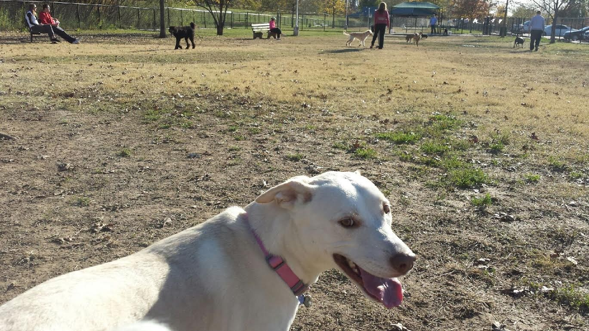
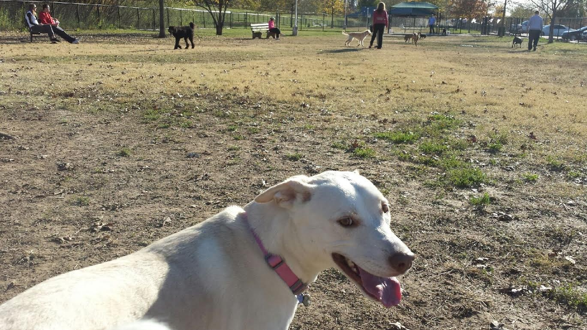
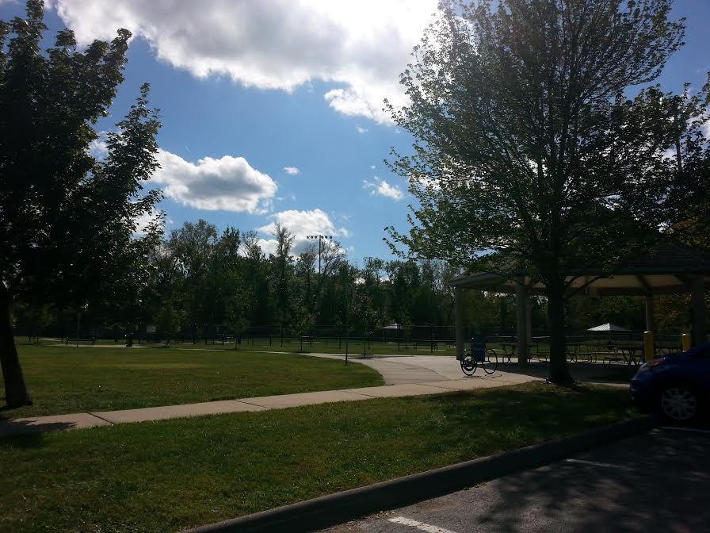

Park Picture:
This photo was taken by me at the Dusable Dog Park. This dog park has 3 large fenced off areas for your pup to run around in!
This photo was taken by me at the Dusable Dog Park. This dog park has 3 large fenced off areas for your pup to run around in!
2598 N Main Street, Saint Charles, MO 63301
1627 Old Baxter Road, Chesterfield, MO 63017
2531 Circle Drive, Maplewood, MO 63143
Old McKelvey Road, Maryland Heights, MO 63043
1655 Woodson Road, Overland, MO 63114
9473 Olive Boulevard, Olivette, MO 63132
12301 Conway Road, Conway Park, MO 63141
This is a picture of the Woodson Road Dog Park. This park has great wide-open areas for high-energy pups!
